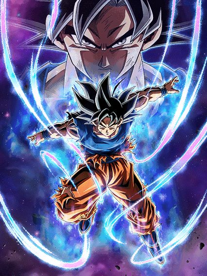
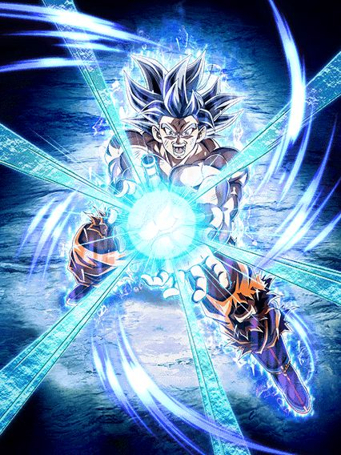
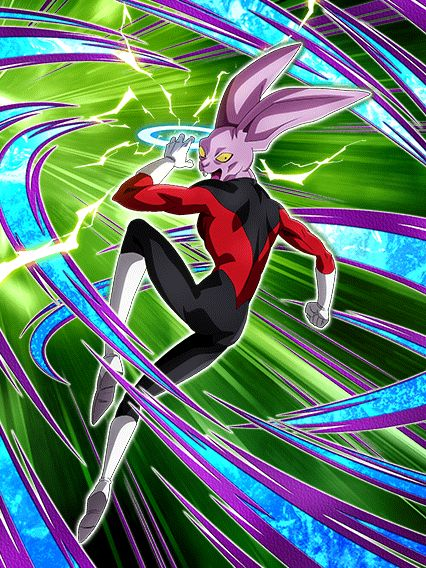

A parte 4 secreta do aniversário que ninguém te contou.
Eu acho que esse é o sinal mais claro de progressão da junção das versões desde q anunciaram ano passado KKKKKKK
Enfim, essa celebração vai ser uma bagunça, rezo pela saúde das suas Dragon Stones

O primeiro card de desvio que não é "desvia-ou-morre".
Esse cara é genuinamente o card de desvio mais seguro do jogo inteiro, já que mesmo que seu desvio falhe 5 vezes seguidas, ele vai provavelmente sobreviver
Antes de qualquer coisa.. eu tenho que falar, MLK, QUE ARTE LINDA MANO
O GOKU COM OS OLHOS FECHADOS É GENIAL, BOM DEMAIS SLK
Bom, o Goku tem uma intro com uma das melhores OSTs do jogo e que só serve pra stats, então nada de muito especial
Agora vem a parte engraçada..
Esse cara tem 70% de chance de desvio.
Até aí tudo normal, mas aí vem a parte boa
Esse cara tem 50% de redução de dano até algum golpe acertar nele, e caso acerte, ele ganha defesa ativa pro resto do turno.
Entende oq eu quis dizer com "card de desvio mais seguro"?
Além disso, ele também lança um Super Attack adicional caso desvie 1 vez no turno, e caso esteja nos slots 2 ou 3, ele lança um adicional com 70% de chance de ser um Super Attack
E não se preocupe com o dano, pq ele tem 70% de chance de crítico incondicional, então tá safe tmb
Agora, vamos falar da transformação dele..
Bom, infelizmente o Goku tem 2 problemas na transformação
O primeiro, é que a condição pra Active Skill da transformação é estar no quinto turno desde a aparição do Goku (ou seja, a mesma condição do Broly LR do aniversário), o que obviamente é odiável e ninguém gosta
E o segundo problema.. ele cria um domínio quando transforma.
Enquanto não corrigirem o problema de vc só poder usar um domínio por vez, levar 2 desse Goku UI numa partida fica chato já que você só pode transformar 1 deles
O bom é que, diferente do Broly, o Goku mantém o desvio e todos os buffs mencionados exceto os da intro, então ele consegue sobreviver mesmo se ficar trancado na forma base pro resto da partida
Enfim, bora pro MUI

Finalmente encontraram o sucessor do Super Vegetto STR LR.
O Goku simplesmente vira um personagem de counter KKKKKKKK balanceado
Pra começar, no turno da transformação, ele tem desvio garantido e um buff muito interessante: Dar 10% de chance de desvio pra todos aliados no turno.
Caso os personagens no turno já desviem, esse buff é somatório, o que significa que personagens como o Goku MUI AGL que tem 77% de chance de desvio, agora tem 87% de chance KKKKKKKKKKK
Bom, toda vez que ele desviar, o Goku automaticamente countera TODO tipo de ataque
Isso inclui ataques básicos, Super Attacks, tanto faz. Contanto que ele desvie, ele vai counterar, o que torna ele o personagem de counter mais podersoso de todos
Esse primeiro turno com desvio garantido é bem importante pro Goku, já que ele não tem uma chance de desvio natural no kit, e sim builda 20% de chance (até 77%) fazendo ataques, e os counters buildam isso, então é bom ficar ligado
Atacar também builda 77% de chance de crítico e 12 de Ki, então é bem fácil pegar os counters, mas também é bem importante
Falando mais sobre o desvio do Goku, ele ainda mantém a mecânica q ele tinha antes da transformação, que é ter redução de dano (agora é 60%) até algum golpe acertar nele, e caso acerte, ele tem defesa ativa
E além de TUDO que eu já mencionei sobre o desvio, caso vc esteja com menos de 50% de HP, o desvio é aumentado em 20% naquele turno, chegando em um total de 97% de chance de desvio (será que agora dá pra desviar?)
Mas espera aí, cê deve estar pensando "ah mas num evento que anular desvio-"
Pode ir parando, pq Goku tem a mecânica mais quebrada ainda, que é o domínio dele.
O Goku automaticamente cria um domínio ao se transformar, e simplesmente ANULA O CANCELAMENTO DE DESVIO
É isso. Enquanto o domínio estiver aberto, qualquer personagem Super Class com desvio pode desviar, independente do evento
O Goku em geral seria um personagem de desvio bem simples se não fosse por esse domínio desbalanceado, que é realmente genial
Acho que o único problema desse card é que essa arte transformada não é muito boa pra mim, e as animações dele são uhhh.. ehhhh..

"Dê Supers adicionais ou vc morre": O card (parte 2).
O Dyspo é um personagem meio uhhhh.. complicado
Basicamente, ele tem 50% de chance de desvio, e cada Super Attack que ele fizer no turno aumenta essa chance em 11%
E veja bem: Cada SUPER ATTACK, então ele certamente tem pelo menos algum Super adicional garantido no kit né..?
....... 💀
Bom, o Dyspo lança um adicional com 70% de chance de ser um Super Attack, e caso tenha um aliado Universe 11 ou todos aliados sejam Tournament Participants, ele lança mais outro adicional de 70% de chance
Ou seja, caso vc consiga que ambos adicionais sejam Supers, e consiga o Super adicional do Hidden Potential, esse cara tem 94% de chance de desvio, o que é obviamente muito bom
O problema tá na chance aleatória de tudo falhar e a chance de ele morrer ser alta demais, o que é bem triste
Ele até tem uma defesa a mais até algum golpe acertar nele, mas ela não ajuda muito já que ele não tem nenhuma habilidade defensiva extra além do desvio
E infelizmente Universe 11 é praticamente uma "categoria morta", já que ela só é composta por personagens novos praticamente, mas fazer o que né, é um card secundário.
Você chegou ao fim dessa página!
Obrigado por ler tudo, e fica a vontade pra ver outras